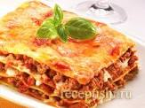

Lasagna

Лазанья классическая с мясом
Лаза́нья — макаронное изделие, тонкий лист теста в форме квадрата или прямоугольника, а также блюдо итальянской кухни,
традиционно приготовляемое из тонких листов теста со слоями различной начинки. По-итальянски, блюдо, в отличие от используемых
для него макаронных изделий, может называться лаза́нья аль фо́рно.
Ингредиенты
- Мясной фарш.......600гр.
- Соус болоньезе......600гр.
- Сливочное масло......60гр.
- Пшеничная мука.....2,5 ст.л.
- Оливковое масло......2 ст.л.
- Молоко......750 мл.
- Готовые сухие листы лазаньи...... 10 штук
- Твёрдый сыр......500 гр.
Шаги
- В сотейник положить сливочное масло и 2 ложки растительного масла, растопить. Постепенно добавлять муку и размешивать так, чтобы не оставалось комочков.
- Когда вся мука вмешана, влить все молоко. Убавить огонь и томить до нужной консистенции: не жидкой, но и не слишком густой. Консистенция нежирной сметаны.
- На сковороде раскалить оливковое масло. Добавить мясной фарш (лучше свинина+телятина).
- Фарш жарить до полуготовности. Влить в него соус болоньезе, посолить и поперчить по вкусу.
- Духовку разогреть до 180 градусов. Форму смазать сливочным маслом. На дно вылить немного соуса бешамель, чуть-чуть, только чтобы покрыть дно.
- Выложить пласты (не вареные). На пласты выложить получившийся фарш (не жалеем!), на фарш — натертый сыр. На сыр — соус бешамель.
- Соуса нужно выкладывать столько, сколько необходимо, на ваш взгляд, чтобы лазанья получилась сочной. Поверх соуса выложить сухие листы лазаньи. Повторить процедуру.
- Последний слой листов промазать соусом бешамель и сверху щедро засыпать сыром. Дать постоять минут 7–10. Поставить в духовку. Печь 30 минут.